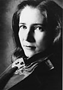

|  |
Cornelia Heard is Associate Professor of Violin at the Blair School of Music, Vanderbilt University. As a member of the acclaimed Blair String Quartet, she has toured extensively throughout the United States and recorded for the Warner Brothers, New World, and Pantheon labels. As a chamber musician she has appeared on series at the Library of Congress and
at New York’s 92nd Street Y, as well as at Lincoln Center, the Kennedy Center, Merkin Hall and Carnegie Recital Hall. She has performed at numerous summer festivals including those of Aspen, Sewanee, Skaneateles, Sedona, Colorado, Kapalua and Roycroft, as well as at Music Mountain and Maverick Concerts. Ms. Heard has appeared as soloist with the North Carolina
Symphony, the Nashville Symphony (as a member of the Blair Quartet), the Municipal Chamber Orchestra in New York, the Vanderbilt Orchestra and the Aspen Brandenburg Ensemble. In the summer of 2002 she will join the faculty of the Killington Music Festival in Vermont and will return to perform at the Roycroft Festival in New York and at Music Mountain in Connecticut.
Ms. Heard received her Bachelor and Master of Music degrees at the Juilliard School where she studied with Dorothy DeLay and coached chamber music with Robert Mann of the Juilliard Quartet. Other chamber music teachers include Felix Galimir, Earl Carlyss, Samuel Rhodes, Ruth Laredo and members of the Cleveland Quartet. |